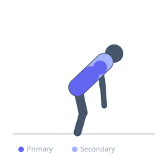
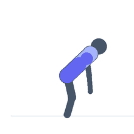

Exercise guide / Prone Cobra Hold
Prone Cobra Hold
The prone cobra is a postural restoration exercise performed face-down on the floor. The exerciser lifts the chest off the ground while simultaneously externally rotating the shoulders and squeezing the scapulae together, holding the position isometrically. This movement counteracts the forward-rounded posture common in sedentary populations and strengthens the posterior chain muscles responsible for upright posture.
Primary muscles
erector spinae
infraspinatus
Secondary muscles
deltoid posterior
trapezius middle
trapezius lower
Stabilizers
gluteus maximus
Equipment
No Equipment (Bodyweight)


Starting position
- Lie face-down on the floor with arms at your sides, palms facing down, forehead resting on the floor. Legs are together and relaxed.
Setup
- No equipment required. Use a mat for comfort. Ensure there is enough space to extend arms fully.
Steps
- Step 1: Squeeze the glutes and brace the lower abdominals lightly.
- Step 2: Rotate the hands outward so the thumbs point up and palms face outward.
- Step 3: Lift the chest and arms off the floor simultaneously, keeping the head in a neutral position aligned with the spine.
- Step 4: Hold the elevated position for the prescribed duration, then slowly lower. Repeat.
Coaching cues
- Squeeze the shoulder blades together and down before you lift
- Think about making your thumbs point to the ceiling
- Keep the neck long — do not crane backward
Breathing
- Breathe normally during the hold — do not hold your breath. Exhale as you lift, inhale during the hold.
Range of motion
- Lift the chest 3-6 inches off the floor. Focus on quality of contraction, not height of lift.
Tempo
- Hold 5-10 seconds per rep, working up to 30-second holds
Common mistakes
- Craning the neck backward — the head should stay neutral
- Failing to externally rotate the shoulders before lifting
- Holding breath rather than breathing through the hold
Safety
- Avoid if you have acute lumbar disc herniation — consult a physiotherapist first
- Do not force excessive spinal extension — lift only as high as comfortable
Training
- endurance: 8–15 reps
- mobility: 5–10 reps
- endurance: 2–3 sets
- mobility: 2–3 sets
- Rest: {'endurance': 45, 'mobility': 60}